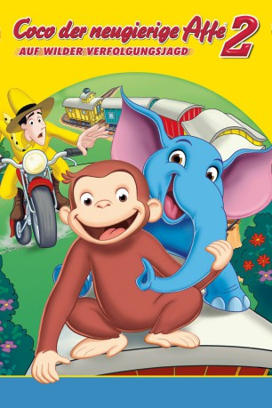

#1800 Coco auf wilder Verfolgungsjagd
Alternativ: Curious George 2: Follow That Monkey!
 
 IMDB-Wertung: 5.6 / 10
IMDB-Wertung: 5.6 / 10  Metascore: 0
Metascore: 0 
Coco, der neugierige Affe, will einen einsamen Zirkuselefanten mit seiner Familie vereinen. So macht er sich mit ihm auf den Weg nach Afrika und erlebt dort turbulente Abenteuer. - Bunter Animationsspaß für die ganze Familie.
Jahr: 2009
Dauer: 80 Minuten
FSK:
Land: USA Studio: Universal Studios Home EntertainmentTonspuren:
Untertitel:
Auflösung: SD (624x352) Größe: 700 MB
Genre: Animation/Trick, Familie
Regisseur: Norton Virgien
Drehbuch: Chuck Tately, Chuck Tately, Darrell Rooney, Margret Rey, H.A. Rey
Soundtrack: Heitor Pereira
Darsteller:
Datei: X:\Kinder Collections\Coco der neugierige Affe\Coco auf wilder Verfolgungsjagd (2009, FSK, 624x352).avi seit 23.08.2015
Festplatte: Kinder-Filme+Trick
 Alle Filme aus Gruppe 'Kinder Collections\Coco der neugierige Affe'
Alle Filme aus Gruppe 'Kinder Collections\Coco der neugierige Affe'